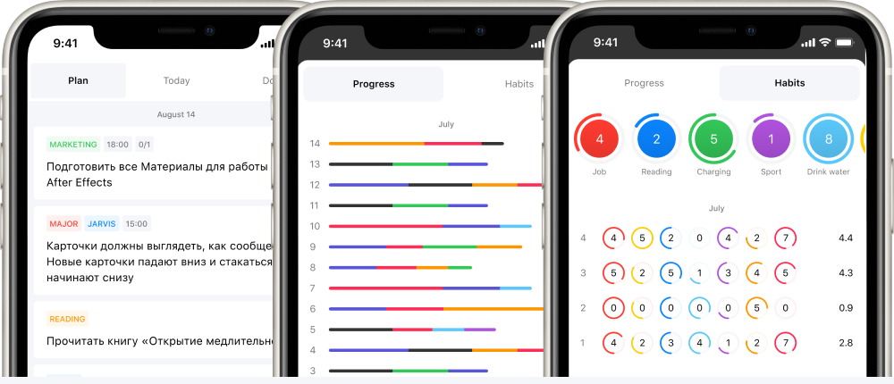
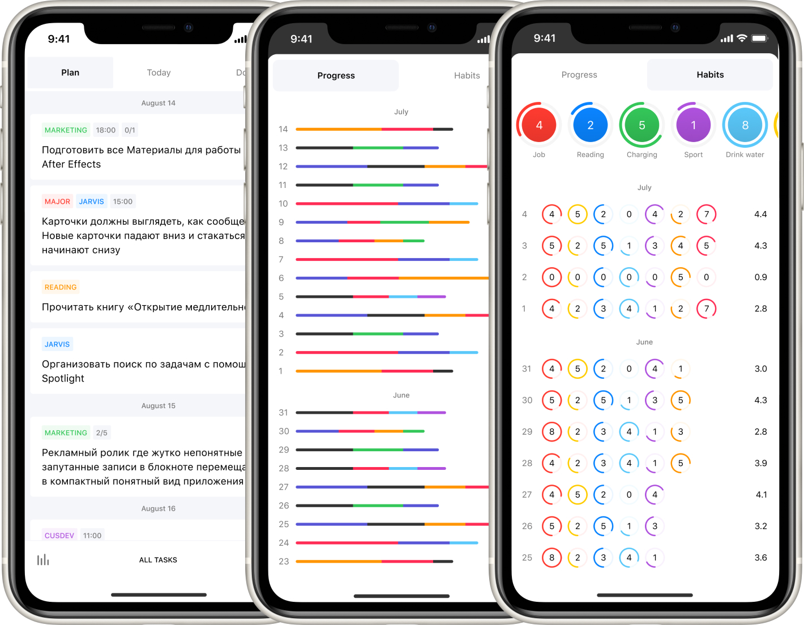

Jarvis
Планировщик дел

Jarvis - это результат выполнения моего плана. Мне нужен был хороший инструмент для того чтобы контролировать свои задачи и не собирать их по частям тетради каждый день.
Подробнее


Планировщик дел
Jarvis - это результат выполнения моего плана. Мне нужен был хороший инструмент для того чтобы контролировать свои задачи и не собирать их по частям тетради каждый день.
Подробнее